Added
Rainbow Crops
There's a new crop variant in town!
The Rainbow Machine and Rainbow Crops are here!
They aren't cheap to craft and require Rainbow Tokens!
Get 50x of the normal/shiny variant to receive 1x of the rainbow variant!
Intended to allow for SUPER CONDENSED crops towards inventory value leaderboard!
Rainbow Crops are worth 50x normal crops, plus a little extra.
Be warned, there's only a 50% chance you'll succeed!
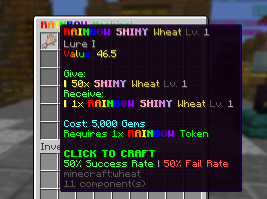
Rainbow Tokens
How else are you meant to craft RAINBOWS?
Rainbow Tokens are found EVERYWHERE!
Including the Composter, Travelling Merchant, random drops from crops and more.
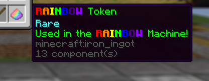
Potato Crop
A little more permanent content!
The Potato Crop is here.
Worth a little more than Tomato!
It comes with it's own island.
Unlocks at Rebirth 5!
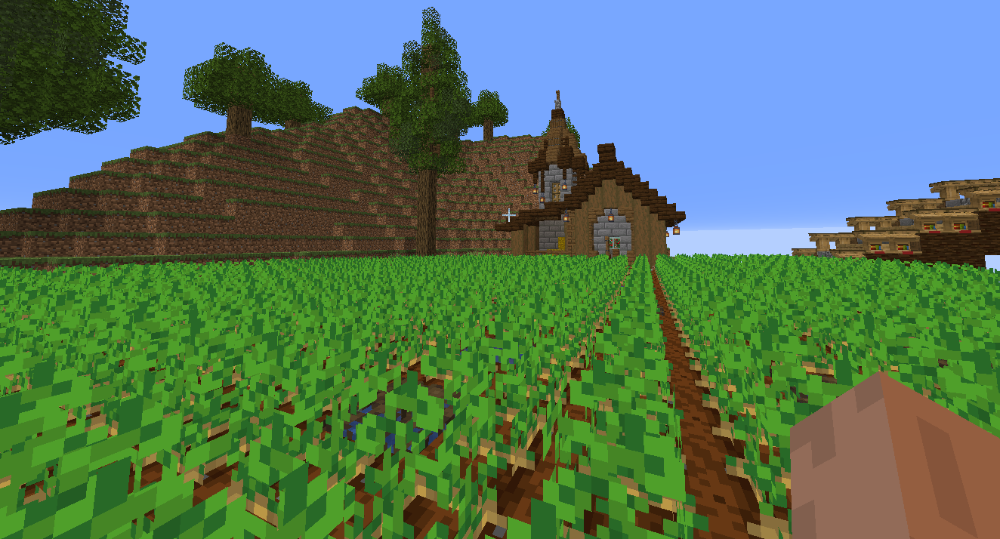
Auto Delete
Get those pesky crops outta here!
You can now auto delete any level of crops you desire!
You can go as high as your Farm Level and cannot go below zero.
Shiny Hunter significantly boosts your chances at Shiny Crops!
Accessible at /autodelete
Don't worry, it resets when you Rebirth so you don't accidently delete everything!
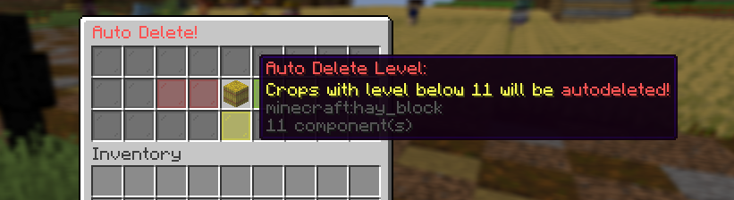
Shiny Quests
Oops, this was meant for last week. Sorry for the delay!
Complete Shiny Quests for chances at potions, sprinklers and the new SHINY HUNTER charm!
Is a quest too difficult? Reroll the quest and it's reward for the price of 2,000 Gems!
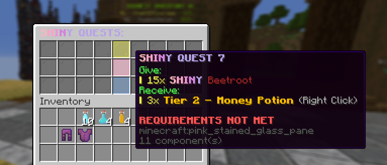
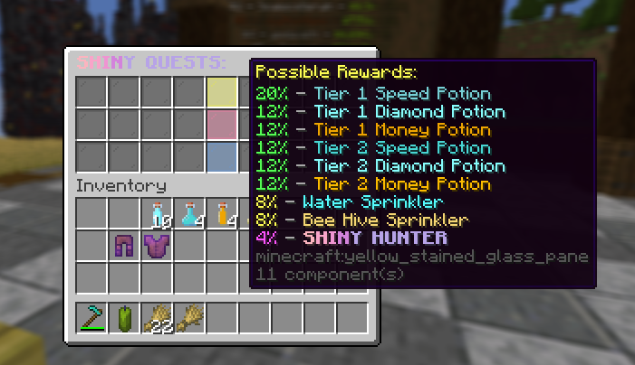
Sprinklers and Area Boosts
Boost certain areas of the server with sprinklers and area boosts!
These can be found everywhere, including Travelling Merchant, Shiny Quests and random item drops!
Ensure you're near some crops. Right-click to place them down!
You can have up to 3 active at a time.
This update brings 4 new ones:
Water Sprinkler - Crops in a small radius grow back much faster
Crate Luck Sprinkler - SIGNIFICANTLY INCREASES the chances to receive PVP Crates
Bee Hive - surrounding crops have a high chance to have POLLINATED variant
INSANE Water Sprinkler - Crops grow back INSANELY FAST in a LARGE region
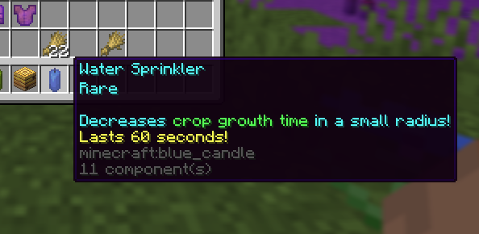
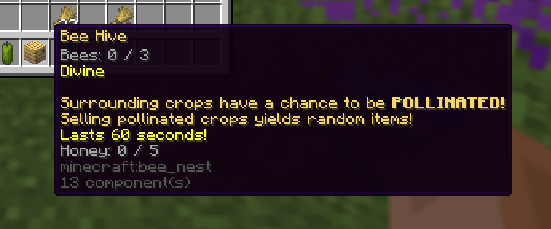
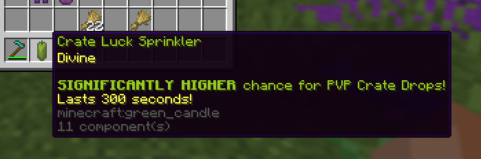
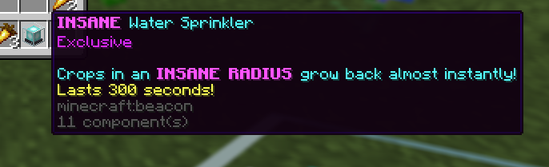
Pollinated Variant
Two new variants in one update?!
The POLLINATED variant has chance to be on crops surrounding the new Bee Hive area booster!
Pollinated Crops always yield random items when sold!
Yes, this means you can have RAINBOW, POLLINATED, SHINY crops!
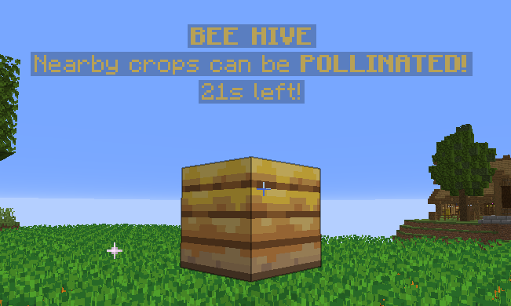
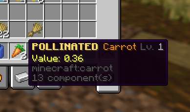
Marketplace
It's time to interact with fellow players!
Similar to what is known as the AuctionHouse, head to the Marketplace to sell/buy many items by other players!
Utilise your earnt gems to purchase items you need most, or get rich quick by selling to fellow players!
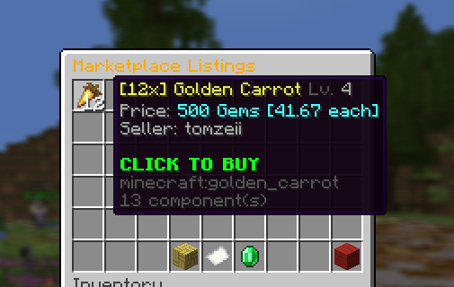
Marketplace Island
A new island.. serving a different purpose to the rest!
The Marketplace Island showcases a large amount of items listed on the Marketplace!
Next update, you'll be able to display Marketplace Listings here!
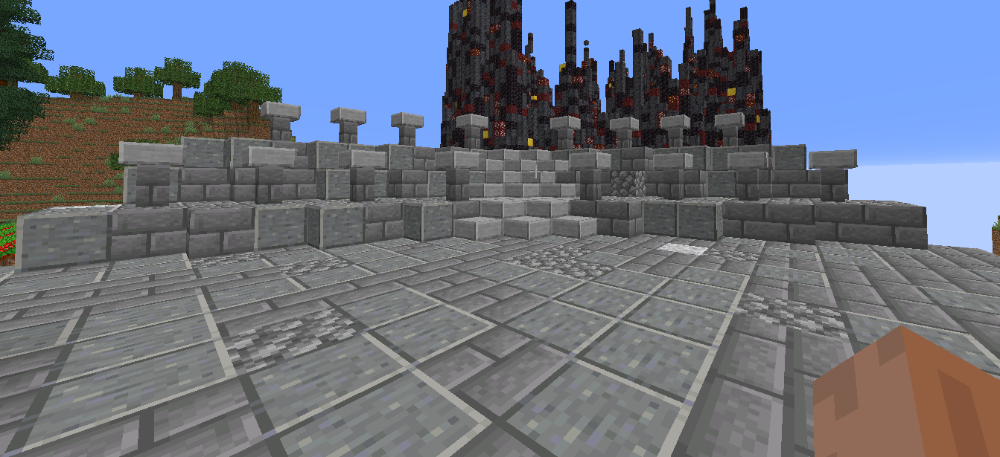
LIVE Auctions
Yes.. live auctions for anyone to bid!
They last 60 seconds!
Bid on items sold by other players!
The top bidder wins the item, and the gems go to the auctioner!
To start one, find the button in the Marketplace Menu!
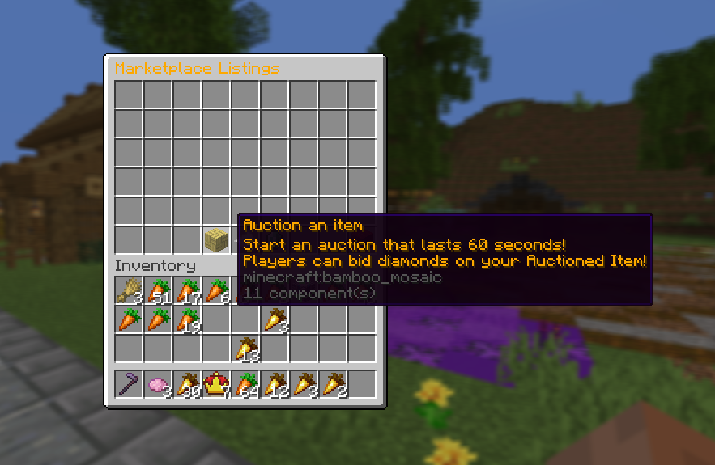
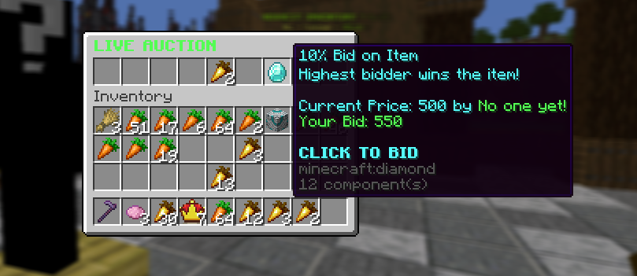
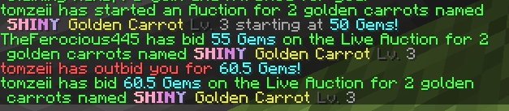
Exclusive
New EXCLUSIVE ITEMS!
Sprinkler Pack!
SUPERCHARGE your farm with this insane deal!
Only $15.99!
Includes:
20x Water Sprinklers
8x Crate Luck Sprinklers
4x Bee Hives
2x Exclusive Chorus Flowers
40x RAINBOW Tokens
4x INSANE Water Sprinklers (only found in this pack!)
This pack is HIGHLY LIMITED and will leave very soon!
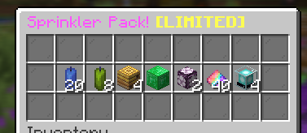
Changed
Vote Crate Reskin
We've given the Vote Crate a re-skin.
We've also added new items to the loot table, including sprinklers, flags and more.
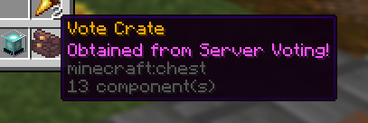
Direction Indicators
To help players, we're trying direction indicators in the action bar.
This includes: Repair NPC, Travelling Merchant, Upgrade and Sell Crops.
These will be implemented throughout the week.
Season Rewards
Tomorrow, we reset Farm Levels, Rebirths and Leaderboards.
You'll keep all items in your inventory, charms, upgrades and more so stock up to prepare.
On join, you'll be rewarded a Season 1 trophy as long as your Farm Level is greater than one.
You'll be able to claim this until Season 2's end.
A reminder that the Highest Inventory Value #1 spot will be rewarded the Medallion charm, along with #1 in the wart competition!
Fixed
- Playtime Rewards fully fixed
~ We truly appreciate your support. Thank you EVERYONE! ps. Use /code Sprinkler5 for 5 free sprinklers!